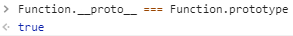

原型链

JavaScript 原型链
基本上所有函数都含有
prototype原型属性，除了Function.prototype.bind()方法生成的函数
1 | const foo = Function.prototype.bind() |
new 过程
新建空对象
{}1
var obj = {}
设置对象
constructor属性为构造函数，根据引擎环境设置原型属性1
obj.__proto__ = Fn.prototype
使用新对象调用函数构造器，上下文
this被指向该对象1
Fn.call(obj)
返回新对象（引用地址）。
注意：若构造函数最终返回值类型为基本数据类型（
number、string、boolean、null、undefined），则new之后返回刚刚创建的实例对象；若构造函数返回值类型为引用类型，则返回这个引用值
Function.proto === Function.prototype
如图：

解析：
Object.prototype由引擎创建，不是由Object()函数创建。所有实例都是对象，但是对象不一定都是实例。Function.prototype也由引擎创建。首先引擎创建了Object.prototype，然后创建了Function.prototype，并且通过__proto__将两者联系了起来- 不是所有函数都是
new Function()产生的。有了 Function.prototype 以后才有了 function Function() ，然后其他的构造函数都是 function Function() 生成的。

实现继承
ES5 写法：
1 | function Super() {} |
ES6 写法：
1 | class SubDate extends Date { |